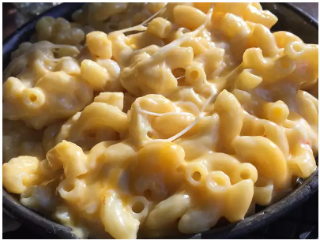

Mac & Cheese

Description
This mac and cheese recipe with a buttered bread crumb topping is creamy and comforting.Its easy to make the cheese sauce form scratch on your stove top, starting with a roux and adding milk , Cheddar , and Parmesan, resulting in a rich, decadent sauce that coats every nook and cranny of the noodles. Serve this comfort-food macaroni and cheese casserole with grilled meats , sloppy joes , fried chicken or alongside a salad for a meatless dinner.
Ingredients
- Box of uncooked macaroni noodles
- you'll need butter and flour to make a eoux for the cheese sauce. you'll need two tablespoons of butter for the topping.
- Use whole milk for the richest flavor and texture
-
This baked mac and cheese recipe calls for cheddar and parmesan cheeses.
- Salt and pepper goes in to sauce . while paprika is sprinkled over the topping .
- Use store -bought dried bread crumbs or make your own .
Steps
- Boil the macaroni in salted water until the noodles are al dente.Drain and transfer to a prepared baking dish.
- Melt butter, then whisk in the flour . Whisk in the milk , bring to a simmer , and stir in the cheeses, Season with salt and pepper and continue simmering until the sauce is thick .Pour the sauce over the noodles and stir.
-
Melt two tablespoons of butter in a skillet , add the bread crumbs, and toast until the crumbs are brown . Spread the topping over the macaroni and cheese , then sprinkle with paprika.
-
bake in preheated oven until the topping is golden brown